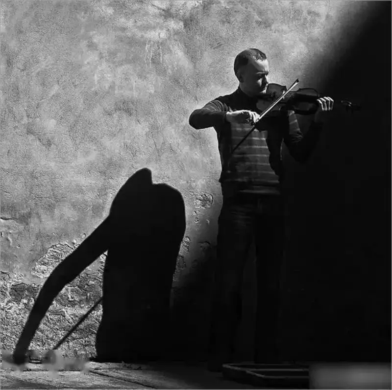
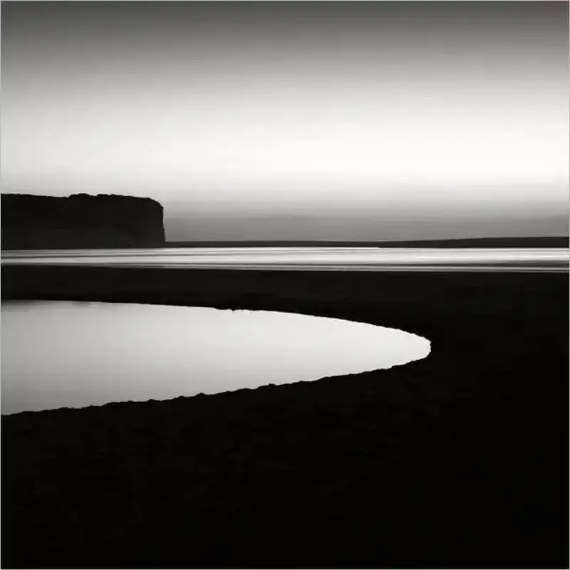
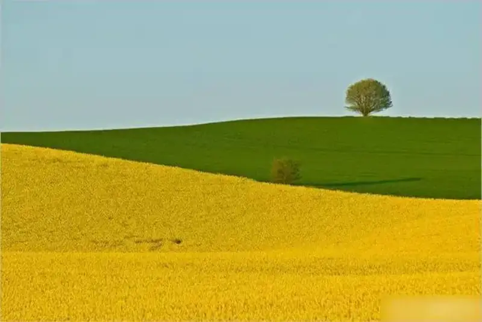
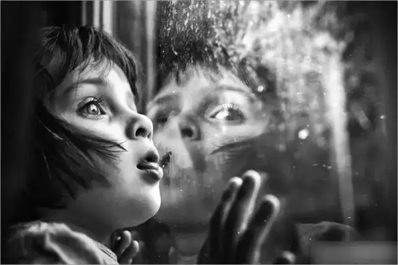
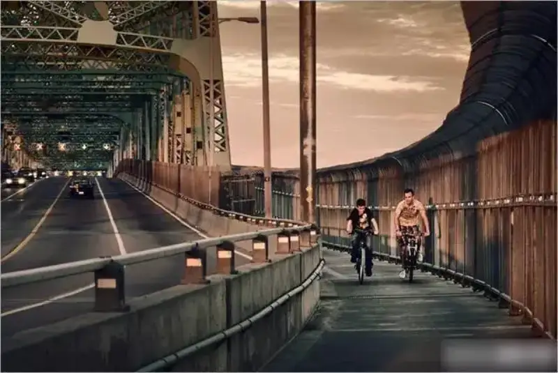

Recording life with pictures turns the days of our youth into lasting memories. Remember these 8 golden rules that top photographers use. They will raise your photography game.
1. Use light and shadow to build dramatic tension
A face shaped by side light, or a silhouette formed by backlight, both strengthen the tension of the frame and add a dramatic sense of story. In the end, understanding light is half the battle.

2. Remember that simple is beautiful
Do not be greedy. A photo needs one clear theme or one main subject. A simple photo is often more powerful.

3. Contrast is your trump card
Black versus white, light versus dark, red versus green, large versus small, hard versus soft, good versus evil. Where there is contrast, the photo has appeal. This is an iron rule.
4. Keep the rule of thirds in mind
This is the basic step of composition. It is simple, yet useful and practical. It gives a photo its basic readability, and it is a foundational technique you cannot skip.

5. The eyes speak
When you shoot people, this is an element you cannot ignore. Catch the emotion in the eyes, and you catch the emotion of the frame. Pay close attention.

6. Make the most of depth of field
"Depth of field is a photographer's playground. It is meant to be played with." Do not fixate on shallow depth of field, with a sharp foreground and a blurred background, just because it looks professional. Try a range of effects.

7. Shutter speed is a magic wand
You have seen them all: a girl frozen in mid-air at a fast shutter, or flowing water, light graffiti, crowds, and traffic at a slow shutter. There are many ways to play with it. Once you know how, your photos will work magic.
8. The angle changes the point of view
Why are most people's photos so dull? Because they will not lower themselves, and they cannot be bothered to move to different heights. So the photos all share the same viewpoint and the same look. Change the angle, and the photos get more interesting.
Call for work from signed photographers of China Network of Photography
1. There is no limit on the type, style, or theme of the work, but it must be presented as one complete feature. Provide a statement of the theme, a recent portrait of the photographer, and a personal biography of about 200 words. You may also include contact details, photography background, titles and credentials, major awards, and reflections on photography.
2. The portfolio (15 to 30 images per set, JPG format, image width over 3,840 pixels or file over 5 MB, no watermark) must include a title or a caption for each image.
3. Pack both sets of files into a RAR or ZIP archive and send it to the editorial office at cnphotos@163.com.
4. Selected work will be published in columns such as Signed Photographer Showcase and Classics by Masters. The work will also be registered in the archive and handled as a stock photo agency. Strong work will be recommended to media such as People's Daily Online, China People's Photography, and The Paper. At the same time, the photographer will qualify for the China Network of Photography Top Ten Photographers award, be listed in the China Network of Photography journal, and receive a signed-photographer certificate and an exhibition certificate.